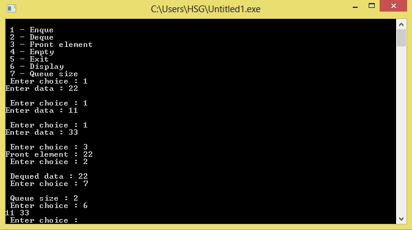

/* C Program to Implement Queue Data Structure using Linked List */
#include<stdio.h>
#include<stdlib.h>
struct node
{
int info;
struct node *ptr;
}*front,*rear,*temp,*front1;
int frontelement();
void enq(int data);
void deq();
void empty();
void display();
void create();
void queuesize();
int count = 0;
void main()
{
int no, ch, e;
printf("\n 1 - Enque");
printf("\n 2 - Deque");
printf("\n 3 - Front element");
printf("\n 4 - Empty");
printf("\n 5 - Exit");
printf("\n 6 - Display");
printf("\n 7 - Queue size");
create();
while (1)
{
printf("\n Enter choice : ");
scanf("%d", &ch);
switch (ch)
{
case 1:
printf("Enter data : ");
scanf("%d", &no);
enq(no);
break;
case 2:
deq();
break;
case 3:
e = frontelement();
if (e != 0)
printf("Front element : %d", e);
else
printf("\n No front element in Queue! queue empty");
break;
case 4:
empty();
break;
case 5:
exit(0);
case 6:
display();
break;
case 7:
queuesize();
break;
default:
printf("Wrong choice, Please enter correct choice ");
break;
}
}
}
void create()
{
front = rear = NULL;
}
void queuesize()
{
printf("\n Queue size : %d", count);
}
void enq(int data)
{
if (rear == NULL)
{
rear = (struct node *)malloc(1*sizeof(struct node));
rear->ptr = NULL;
rear->info = data;
front = rear;
}
else
{
temp=(struct node *)malloc(1*sizeof(struct node));
rear->ptr = temp;
temp->info = data;
temp->ptr = NULL;
rear = temp;
}
count++;
}
void display()
{
front1 = front;
if ((front1 == NULL) && (rear == NULL))
{
printf("Queue empty");
return;
}
while (front1 != rear)
{
printf("%d ", front1->info);
front1 = front1->ptr;
}
if (front1 == rear)
printf("%d", front1->info);
}
void deq()
{
front1 = front;
if (front1 == NULL)
{
printf("\n No elements to display");
return;
}
else
if (front1->ptr != NULL)
{
front1 = front1->ptr;
printf("\n Dequed data : %d", front->info);
free(front);
front = front1;
}
else
{
printf("\n Dequed data : %d", front->info);
free(front);
front = NULL;
rear = NULL;
}
count--;
}
int frontelement()
{
if ((front != NULL) && (rear != NULL))
return(front->info);
else
return 0;
}
void empty()
{
if ((front == NULL) && (rear == NULL))
printf("\n Queue empty");
else
printf("Queue is not empty");
}
Output:
